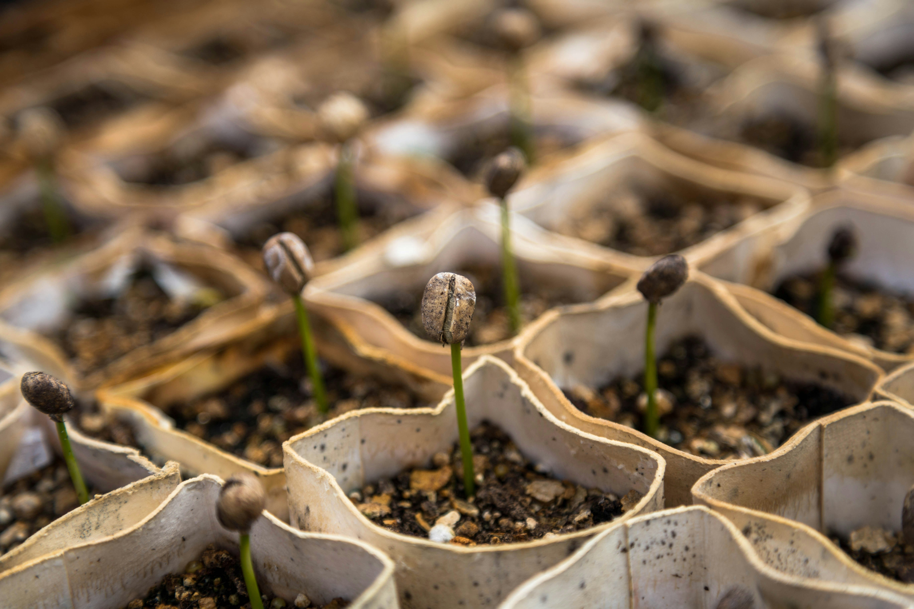

Our Impact

Empowering Rural Communities
We work hand-in-hand with coffee farmers in rural areas,
ensuring they are paid fairly and treated with dignity.
Our partnerships create long-term job opportunities where work is often scarce,
giving families the stability they deserve.
- 42 sustainable jobs created for coffee farmers and harvesters.
- Fair wages that are 30% above the regional average.
- Training programs to help farmers improve crop yields and quality
Giving Back to Those in Need
A portion of every cup you buy goes directly to feeding and supporting vulnerable communities.
Together, we’ve turned coffee into a lifeline for many.
So far we have:
- Donated over R85,000 to local charities and feeding schemes.
- Provided 3,500+ warm meals to families living in poverty.
- Supported school lunch programs for 120 children across 4 villages.
Expanding Our Reach
We’re not stopping here. Our vision is to support more farms and communities every year.
By 2026, we aim to:
- Create 100+ jobs across 5 new rural farming regions.
- Donate over R250,000 to community projects.
- Partner with at least 20 schools to provide meals and supplies for children.
Transparency You Can Trust
We believe in showing exactly where your contribution goes.
Every month, we publish our donation totals and updates on the lives we’ve touched.